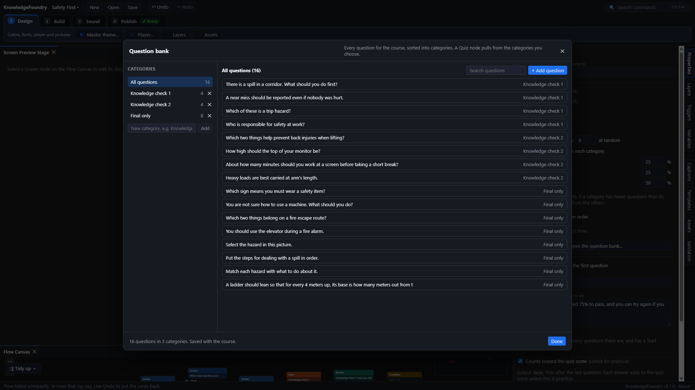
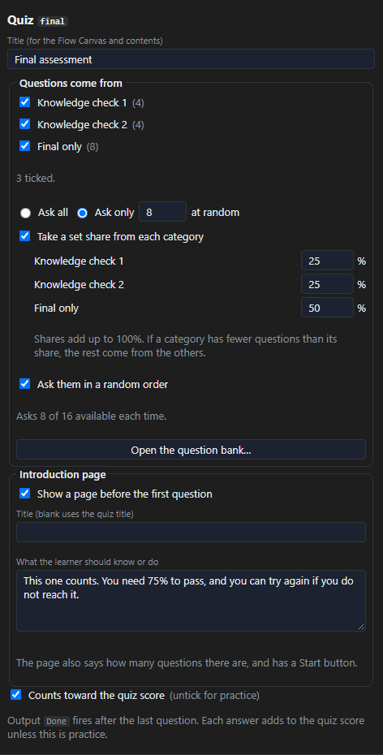

Build a quiz
Questions live in one question bank for the whole course. Quiz nodes on the flow pull from it, so the same bank can serve your knowledge checks and your final assessment.
1. Fill the question bank
- On the Build tab press Question bank….
- Add a category for each group you want to pull separately, for example Knowledge check 1, Knowledge check 2, Knowledge check 3 and Final.
- Pick a category and press + Add question. Type the question, choose the type (see Other kinds of question below, or one a plugin adds, which brings its own settings), enter the answers and mark which is right (a dot for one right answer, ticks for several). Set points, tries (1 to 3) and Shuffle the answers if you like (with shuffling on, Mix the answers again on Try again gives a new order on each try; left off, Try again keeps the order the learner first saw. It is switched off, with a note saying why, while Tries is 1, because the learner gets no second try), plus feedback for each answer and a message for right and wrong.
- To move a question, open it and change its Category. A question sits in one category.

Other kinds of question. Besides Single answer, Multiple answers and True or false, choose one of these in the Type list. For the lists, type one entry on each line.
- Matching: write pairs as
item | its match, such asDog | Barks. The learner chooses each item's match from a list. - Drag and drop: the same pairs. The learner drags each item onto its target. Without a mouse they press Enter on an item to pick it up and Enter on a target to put it down.
- Put in order: write the steps in the right order. The learner sees them mixed up and uses the arrow buttons (or drags) to put them right.
- Click on the picture: choose a picture, say what it shows, and list its parts as
name | left, top, width, height, all as percentages of the picture, with a star in front of each right one, such as* Saddle | 10, 20, 30, 15. Add some wrong parts too. The learner clicks a part, or chooses one by name from a list. - Number: the learner types a number. Set the right answer, how far off it may be (0 means exact) and a unit such as kg, shown beside the box.
- Slider: the learner moves a slider. Set the lowest and highest value, how much each move changes it, the right answer, how far off it may be, and a unit. The arrow keys move it.
- Rating scale (Likert): one statement the learner rates on a scale you write, from lowest to highest (it starts as Strongly disagree to Strongly agree).
- Rating grid: several statements on one screen, each rated on the same scale.
What the LMS is told. In a SCORM or cmi5 package, each time a learner finishes a question the course also tells the LMS what they answered: which choice, which matches, which order, or which point on a rating scale, and whether it was right (ratings are reported with no right or wrong). Most LMSs show this in a report: in Moodle, open the SCORM activity, choose Reports then Interactions report, or Track details for one learner. Nothing extra is needed in your course. A web package sends nothing, because there is no LMS to receive it. The wording of long answers is cut to what SCORM allows, and what you type is not read by the LMS as anything but text.
Use the answer later. On a single answer, true or false or rating question, Save the answer in a variable keeps what the learner chose, so the course can act on it. First add a variable in the Variables panel: a number variable gets the place of the choice (1 for the first, 2 for the second...), a text variable gets its wording, and a yes or no variable (true or false only) gets yes for the first choice. Then pick it in the question. After the question, add a Condition that tests the variable to send learners down different paths, for example role equals 1 goes to the manager screens. Any screen can also show it: put {{role}} in its text. It is off unless you choose a variable.
The two rating questions have no right answer. They are not scored, have no points or tries, never count toward the pass mark, and after answering the page says Your answer is recorded. The answer is still sent to the LMS (with no right or wrong), and a rating scale question can keep it in a variable with Save the answer in a variable, like any single answer question.
2. Add a quiz to the flow
- Press Quiz on the Build tab. A Quiz node and a Results page appear, wired together. (If the bank is empty you get three sample questions.) Question adds a single question written on the node instead.
- Wire the screen before it to the quiz's Show socket, Passed on to a Complete node, and Failed to a screen that explains what to do next.
- Select the Quiz node. Under Questions come from tick the categories to use (none ticked means all). Choose Ask all, or Ask only a number picked at random. When you ask only some from two or more categories you can tick Take a set share from each category and give each a percentage.

An introduction page. Select a Quiz node and tick Show a page before the first question under Introduction page. Type a title (blank uses the quiz's name) and what the learner should know or do. The page also says how many questions there are and has a Start button. It is off unless you tick it.
Design the question page. Select any Question or Quiz node: the stage shows the question page for the whole course. One design serves every question in every quiz, so a change here changes them all (except a quiz or question that has its own design; see below). The page has these items, drawn with sample words: the progress line (Question 1 of 5), the question text, the answer choices, the feedback box, and the Submit, Next question and Try again buttons. Next question shows Continue on the last question, and Try again only when the learner has tries left. Submit sits in front of the other two, because it is the one learners see first; use the Layers panel to pick the ones behind it.
- Drag an item to move it, and use its handles to resize or turn it, as on a screen.
- Style it in the floating palette or in Properties: text size (0 uses the course's size), alignment of the progress line and question text, text color, the background of the choices and the feedback box, and the color of each button. A button's words are drawn in black or white, whichever reads best on its color.
- Nothing can be added to the question page yet, and its items cannot be copied. Some items can be removed; see Remove an item from a quiz page below.
- A new course starts with a design that looks like the standard page, so you only need this if you want a different layout.
- Press Preview to see it with your real questions. On a phone the items stack in one column, in reading order, whatever their places on the stage.
- Choices are always real radio buttons or check boxes, Submit stays off until something is picked, and feedback is announced to screen readers, whatever the layout.
- The question and the feedback grow downward when their text is long, and the choices scroll. The part that grows can slide under the item below and be hidden, so leave room under them and check the preview with your longest question. Check course warns when a question or its feedback is probably too long for its box.
Design the introduction page. The introduction page also has one design for the whole course. There are two ways to open it:
- Select a Quiz node and press Introduction page in the bar above the stage. Press Question page to go back.
- Or, in the Quiz node's Properties, with Show a page before the first question ticked, press Design the introduction page.
The stage then shows the introduction page with sample words: the quiz title, the instructions, the number of questions and the Start button. Each quiz fills in its own title, instructions and number of questions when the course runs.
- Move, resize and style the items as on the question page: text size (0 uses the course's sizes; the title uses Heading 1), alignment, text color, and the color of the Start button. Start's words are drawn in black or white, whichever reads best on its color.
- A change here changes the introduction page of every quiz. If the note above the stage says the selected quiz does not show it, tick Show a page before the first question to switch it on for that quiz.
- Nothing can be added to the introduction page yet, and its items cannot be copied. The title, instructions and number of questions can be removed (see below).
- When you select another node, the stage goes back to the question page.
- On a phone the items stack in one column: title, instructions, number of questions, Start. The title, instructions and number of questions grow downward when their text is long and can slide under the item below, so leave room under them.
3. Choose what each Results page shows
- Select a Results page. Under Show the results of pick All quizzes that count toward the score, or Only these and tick the quizzes it should total. The node on the canvas says which.
- Set the pass mark as a percentage (blank uses the course's mastery score, or 80%).
- Tick Let learners retry and wire the Retry socket back to the quiz. Retry clears only the answers that page was showing. Tick Show each question to let learners review their answers.
- To report the score to the LMS, select the Complete node and set Score variable to
quizPercentwith Min0and Max100.
Design the results page. Select any Results node: the stage shows the results page for the whole course. One design serves every Results page, so a change here changes them all. The page has these items, drawn with sample words: the heading (Your results and the page title), the score (the percentage, the number right and the points), the pass or fail message, the answer review, and the Continue and Try again buttons. The answer review shows only when Show each question is ticked, and Try again only when Let learners retry is ticked and the learner did not pass.
- Move, resize and style the items as on the question page: text size, alignment of the heading, score and message, text color, the background of the review rows, and the color of each button.
- The page title, the pass and fail messages and the button words are still typed on the Results node.
- The pass or fail message stays green or red, and its words say whether the learner passed. On a dark background it uses a lighter green or red, so it stays easy to read.
- Nothing can be added to the results page yet, and its items cannot be copied. The heading, score, message and answer review can be removed (see below).
- A new course starts with a design that looks like the standard page. Press Preview to see it with a real score. On a phone the items stack in one column, in reading order.
- The heading, the score and the message grow downward when their text is long, and the review scrolls; learners can scroll it with the keyboard too. The part that grows can slide under the item below and be hidden, so leave room under them.
A design for one quiz, question or results page. Each quiz page normally uses the course design. To give one node a layout of its own:
- Select the Quiz, Question or Results node (for a quiz's introduction page, also press Introduction page above the stage).
- In the note above the stage, press Use a design for this quiz only (this question only, this results page only). It starts as a copy of the design the page uses now.
- Move, resize, style and remove items as usual. The note now says the design is for this quiz only, and changes there apply only to it; the course design and every other quiz stay as they were. The node's Properties say This quiz uses its own question page design. • A Quiz node can have its own question page and its own introduction page. The questions it pulls from the question bank use its question page. • To go back, press Use the course design again in the note. It asks first, because the quiz's own design is thrown away. Undo brings it back.
Start a quiz page from a template. A template is a ready-made layout for one kind of quiz page.
- Select the Quiz, Question or Results node (for a quiz's introduction page, also press Introduction page above the stage).
- In the note above the stage, press Templates…. The list shows the templates for that page: the ones that come with the app (Classic, Wide choices for the question page, Big buttons, Centered and Side by side), then any a plugin adds, then the ones you saved.
- Press Use this design under the one you want. The next step says what will change: where each item sits, its size, text size and colors, and which items are removed. Press Use this design again to apply it, or Cancel to go back to the list. • On the course design, quizzes, questions or results pages with a design of their own keep it. The confirm step says how many there are and offers Also switch … to this template. Tick it to switch them too; their own design for that page is deleted (a quiz keeps its own introduction page when you apply a question page template). • On a design for one quiz, question or results page, only that node changes. • One Undo brings everything back. The words, choices and buttons a learner uses do not change. • The narrower layouts (Centered, Side by side) fit fewer words on a line. If Check course then warns that text runs over the item below, make the box taller, the text smaller or the wording shorter.
Save a quiz page design as a template. Press Save as template… in the note above the stage, type a name and press Save template. It keeps where each item sits, its size, text size and colors, and which items are removed; it does not keep locks, groups or items hidden while editing. It is offered under Templates… above that kind of page in every course on this computer. Press ✕ on one of your templates to delete it; the ones from the app and plugins cannot be deleted.
Remove an item from a quiz page. Select an item on the stage and press Delete, or press the bin next to it in the Layers panel. These items can be removed: the progress line and the feedback box (question page), the heading, the score, the pass or fail message and the answer review (results page), and the quiz title, the instructions and the number of questions (introduction page).
- The question, the answer choices, Submit, Next question, Continue, Try again and Start cannot be removed: learners need them to use the page. Pressing Delete on one says so.
- Removed items are listed in the note above the stage, for example Removed: Feedback box. Press Put back next to one to return it to its standard place. The same list is at the bottom of the Layers panel. Undo works for both. With the keyboard, focus moves on to the next bin or Put back button, so you keep your place.
- Removing works on the course design and on a quiz's own design.
- A removed feedback box or pass or fail message is still read out to screen reader users, but sighted learners no longer see whether they were right (apart from the marks on the choices) or whether they passed. Only remove them when something else on the page or in the course tells learners.
What Check course says about quiz pages. Check course looks at each quiz page design your course uses (the course design and each node's own) and warns, without stopping you from publishing, when:
- the feedback box or the pass or fail message has been removed, so sighted learners are not told whether they were right or passed;
- a text color or background you picked for an item is hard to read (for example light text on a light choice background). Buttons are not checked, because their words are always black or white;
- a question, its feedback, a quiz title, instructions, a results heading, the score (for example after making it bigger) or a pass or fail message is probably too long for its box and runs over the item below it. This is an estimate from the number of letters and the text size, so always check the preview. To fix it, make the box taller, the text smaller or the words shorter. When many questions are too long, Check course lists the first one and says how many more there are. Click a finding to open that page on the stage.
Example: three knowledge checks and a final
- Categories: Knowledge check 1, 2, 3, and Final (or reuse the three check categories for the final).
- After each lesson add a Quiz node pulling that check's category. Untick Counts toward the quiz score so it is practice. Give it its own Results page set to show just that quiz.
- At the end add a Quiz node that ticks all the check categories, asks 10, and takes a share from each. Leave it scored. Its Results page shows all quizzes that count toward the score, with the pass mark and retry, and Passed goes to Complete.
- The practice checks never affect the score reported to the LMS.
Good to know
- The quiz keeps
quizPoints,quizPossible,quizPercent,quizCorrectandquizAskedup to date, for scored quizzes only. Use them in a Condition (for example,quizPercent >= 50for a remedial screen) or in text such as{{quizPercent}}%. - Where `{{variable}}` works. In a text item, a button's label, an image's alt text, a video's title and an item's accessible name (the name a screen reader gives it). It does not work in screen titles, the table of contents, quizzes or captions. The editing view shows the raw
{{score}}; the value appears in Preview and the course. A name that is not a declared variable is flagged by the checks. A screen reader is not told when a value changes; it hears the new words next time it reaches the item. - If a category has fewer questions than its share, the rest come from the other categories. Check course warns when the shares do not add up to 100%, when a quiz asks for more than are available, and when a question has no right answer.
- A multiple-answer question is right only when exactly the right answers are picked.
- With more than one try, the right answer is not shown until the learner is right or out of tries.
- Learners cannot use Back during a quiz, and quiz pages show in the contents but can't be jumped to.
- A learner who leaves mid-quiz comes back to the same question and score.
- A quiz page can have its own theme, like a screen (Override master theme).
- Deleting a category keeps its questions as Uncategorized.